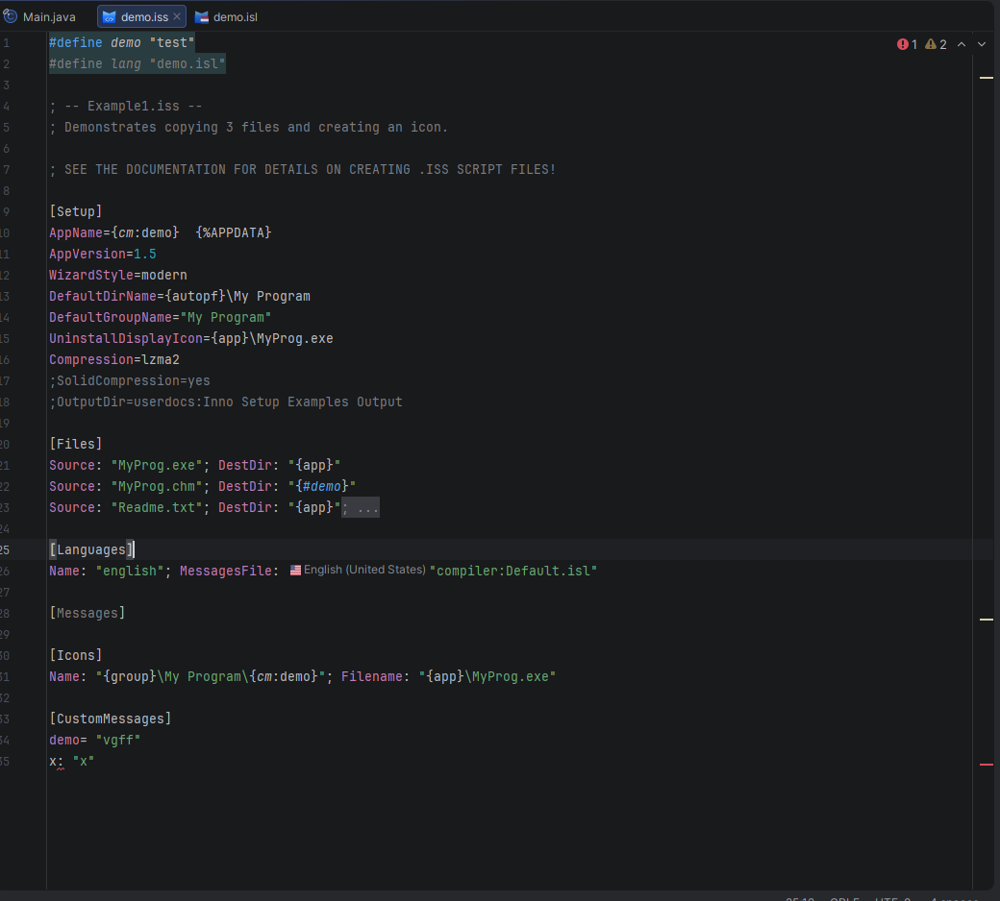

Inno Setup 스크립트 파일
이 플러그인은 Inno Setup 스크립트 파일(.iss)을 기본 설치 프로그램 정의 형식으로 지원합니다. 스크립트 파일은 설치 프로그램이 무엇을 빌드하는지, 무엇을 설치하는지, 어떤 언어를 제공하는지, Setup 및 Uninstall이 어떤 런타임 작업을 실행하는지를 설명합니다.

지원되는 섹션
.iss 파일에는 다음이 포함될 수 있습니다:
[Setup]— 설치 프로그램 메타데이터, 출력 설정, 마법사 동작, 권한, 서명, 압축, 버전 요구사항[Types],[Components],[Tasks]— 선택 가능한 설치 모드, 기능 그룹, 선택적 작업[Dirs],[Files],[Icons],[Registry],[INI],[InstallDelete],[UninstallDelete]— 파일 시스템, 바로 가기, 레지스트리, INI, 정리 작업[Run]및[UninstallRun]— 설치 또는 제거 중에 실행되는 명령[Languages],[LangOptions],[Messages],[CustomMessages]— 다국어 설치 프로그램 및 현지화된 텍스트[ISSigKeys]—.issig서명 검증에 사용되는 공개 키[Code]— Pascal 스크립트 사용자 지정 로직
[Setup]은 중앙 스크립트 섹션으로 일반 설치 프로그램 스크립트에 필수입니다. 다른 섹션은 선택적이며 설치 프로그램 워크플로에 따라 조합할 수 있습니다.
편집 기능
구문 강조
스크립트의 모든 요소가 각각 다른 색으로 표시됩니다:
- 섹션 헤더(
[Setup],[Files]등)가 구조적 마커로 눈에 띄게 표시 - 지시문 키와 매개변수 키가 값과 별도로 강조 표시
{app},{autopf},{group},{cm:…}등의 내장 상수가 값과 문자열에서 색상으로 표시- 파일 상단의 ISPP 전처리기 행(
#define,#include,#if등)이 자체 색상 구성표를 가짐 - 주석(
;으로 시작하는 행)이 시각적으로 낮게 표시됨
코드 완성
입력하는 동안 컨텍스트 인식 제안이 제공됩니다:
[뒤의 섹션 이름[Setup]의 지시문 키와 다른 모든 섹션의 매개변수 키- 알려진 플래그 값과 열거형 옵션 값
{#뒤와#define/#include키워드 뒤의 ISPP 변수 이름- 국기 아이콘과 로케일 이름이 포함된
Languages:매개변수의 언어 식별자
인라인 문서
지시문 키 또는 매개변수 키 위에 마우스를 올리면 번들된 Inno Setup 사양에서 설명을 읽을 수 있습니다(허용되는 값 목록과 비고 포함). 편집기를 떠날 필요가 없습니다.
참조 해결
플러그인은 선언과 사용 위치 간의 상호 참조를 해결합니다:
| 참조 유형 | 선언 | 사용 위치 |
|---|---|---|
| 태스크 / 컴포넌트 / 타입 | [Tasks] / [Components] / [Types]의 Name: |
Tasks:, Components:, Types: 매개변수 |
| ISPP 정의 | #define Name |
값과 문자열 내의 {#Name} |
| 언어 접두사 | [Languages]의 Name: |
[Messages]의 german.MessageKey |
| 사용자 지정 메시지 | [CustomMessages]의 Key= |
값 내의 {cm:Key} 상수 |
지원되는 모든 참조 유형에서 정의로 이동(Ctrl+B / Cmd+B)과 사용 찾기(Alt+F7)가 작동합니다. 이름 바꾸기 리팩터링은 모든 사용 위치를 일관되게 유지합니다.
인레이 힌트
[Languages] 항목의 MessagesFile: 값 옆에 언어 국기 아이콘이 인라인으로 표시됩니다. 힌트에는 로케일 이름(예: English (United States))이 표시되어 .isl 파일을 열지 않고도 참조된 언어를 즉시 확인할 수 있습니다.
유효성 검사 및 빠른 수정
주석 작성자가 편집기에서 직접 문제를 강조 표시합니다:
- 알 수 없거나 철자가 잘못된 지시문/매개변수 키
- 누락된 필수 매개변수(추가하는 빠른 수정 포함)
- 중복 플래그(제거하는 빠른 수정 포함)
- 마지막 매개변수의 후행 세미콜론(제거하는 빠른 수정 포함)
[Code]가 마지막 섹션이 아닌 경우(이동하는 빠른 수정 포함)- 빈 섹션(삭제하는 빠른 수정 포함)
- 누락된 필수 섹션(추가하는 빠른 수정 포함)
- 해결되지 않은 상수 및 참조
구조 뷰
구조 도구 창(Alt+7)은 모든 섹션과 항목의 트리 뷰를 표시합니다. 항목을 클릭하면 해당 줄로 이동합니다.
코드 접기
섹션과 긴 매개변수 항목을 독립적으로 접어서 큰 스크립트 작업 시 시각적 노이즈를 줄일 수 있습니다.
괄호 및 따옴표 매칭
편집기는 {, [, "를 자동으로 닫고 커서가 옆에 있을 때 매칭 쌍을 강조 표시합니다.
코드 항목 이동
섹션 내의 매개변수 항목을 Alt+Shift+위/아래로 수동으로 잘라내어 붙여넣지 않고도 위아래로 이동할 수 있습니다.
전처리기(ISPP)
ISPP 전처리기 지시문은 스크립트 파일에 주입되고 #define 이름에 대한 자체 강조 표시, 완성, 이름 바꾸기, 사용 찾기 지원을 받습니다. 섹션 값 내의 인라인 {#Name} 참조는 #define 선언으로 해결되며 동일한 이름 바꾸기/사용 찾기 흐름에 참여합니다.
지원되는 지시문, 표준 사전 정의 변수, 인라인 {#…} 출력에 대해서는 Inno Setup 전처리기를 참조하세요.
스크립트 빌드
스크립트는 IDE에서 직접 ISCC로 컴파일할 수 있습니다. 자세한 내용은 빌드 통합을 참조하세요.